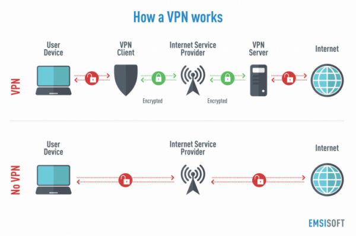

19 December, 2020
What is a VPN

Before we get into what VPNs are, we need to understand the basics of how the internet works. When you are browsing the internet, you, along with people in your area are assigned a single IP address. An IP address is a unique 12 digit number that lets the servers or the internet to know where the traffic is coming or is to be sent. It is essentially your (you and the others assigned the IP in the area by your ISP) virtual address that the internet uses to send and receive data packets. Normally the request you make (for example to go to https://www.google.com/) is made from your machine which further goes to your router which gives you a unique number and keeps track of your machine using it’s mac address. This request is then made sent to the ISP where, the address further changes to that of the router and the IP number is assigned to the request which further goes and asks the DNS about the address of the site you were visiting (like- https://www.google.com/ ) and is then rerouted to it. After the request, the data goes back to your ISP who further sends it back the router which gives it your machine. Here your internet activity is tracible to an extent as your IP address is known throughout the process and normally the ISP keeps a track of who made the request. A VPN is a Virtual Private Network which is used to mask this. Here your machine makes the request which is sent to the router. Here instead of the address of the packets being to the DNS for the requested site (in our case https://www.google.com/) is rather to the VPN service servers. From there, your IP address changes to that of the VPN server and that’s how its seen by other sites. From their your site is requested from DNS which is returned to the VPN server where it changes it IP to your ISP for you. This entire process is encrypted so your data is relatively safer.
Why would you wanna use it
Sometimes IP address from certain countries/locations is banned for certain reasons. With the help of VPN, you can your geolocation and make it look like the request is from a different country (the country where the VPN server is).
VPN also adds a factor of safety in public networks/WiFis. It also masks your online activity to your ISP and the government.
Disadvantages of a VPN
Sometimes VPNs can lead to your surfing being slowed as the data packets needs to be rerouted multiple times. It also makes the distance larger. Another reason for slow surfing can be because of the VPN servers. If the servers don’t have enough bandwidth, you can feel a delay during rush hours. Also, certain countries have banned VPN and using them cause more problems than actually viewing the content. It also is not necessary that VPNs will works as some platforms like Netflix are working to ban its usage on the platform.